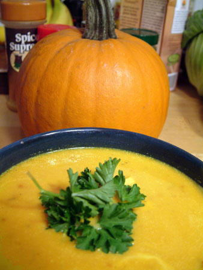

Valentinina čorba od bundeve
Gost post: Charlie Brown (nema blog, za sada)
Izrendati (na sitno) jednan koren celera i zeleni i šargarepu (od količine čorbe zavisi i količina šargarepe).
Dva čena belog luka blago zgnječiti i pustiti da se malo proprže na ulju (može maslinovo, a ne mora). Kada počnu da tamne, izvaditi ih i ubaciti zelen/celer i šargarepu. Dodati malo vode i dinstati dok ne omekša.
Dodati bundevu seckanu na kockice i zaliti vodom da ogrezne (što će reći samo da pokrije bundevu). Kada bude skuvano, malo prohladiti pa izmiksati ili u blenderu ili štap mikserom.
Začiniti po želji (so, biber obavezno, preporučujem malo muškatnog oraščića i mlevenog kima ili cimeta, ali ostavljam vama da izaberete). Pošto će se čorba zgusnuti, dodati još vode, pustiti da proključa i to je to.
Varijacije za služenje: kockice prepečenog hleba, dodati malo pavlake ili jogurta, a ako baš hoćete i imate vremena možete da ubacite kockice neke pršute da malo oplemeni čorbicu.
p.s. Pošto je sad baš sezona, da li je neko još pravio nešto od bundeve?
 RSS feed
RSS feed
 sadržaji se objavljuju pod
sadržaji se objavljuju pod
Komentari
Moja sestra pravi nesto potpuno super sa bundevom u rerni. Narenda se bundeva, može i na kockice, pa se stavi brdo začina i peče se u rerni pola sata. I bude stvarno jako dobro. al pravo da ti kažem, ne mogu da se setim šta sve ide unutra, evo poslala sam joj mail, tako da ću imati potpun recept danas-sutra.
elektrokuhinja | 25.11.07 17:54
Bas me zanima, nisam nikad cula za tako nesto
la lara | 25.11.07 21:26
Moja mama pravi odlicnu pitu bundevaru (sa tankim korama, kao za gibanicu). Moracu da je pitam za recept. :)
Maja | 26.11.07 11:30
Bundeva a la sestra:
bundeva iseckana na kockice
crni luk iseckan na sitno
soja sos
ruzmarin, majcina dusica i origano
beli luk ko voli..
Zacine i luk staviti u soja sas da odsede malo ( ako nisu svezi nego suseni) i da omeksaju.
Onda se rukama umesi to sve zajedno s komadicima bundeve i stavi u rernu na nekih pola sata (probati posle 20 min da li je bundeva meka).
Na kraju, dodati soja sos po ukusu jer je soja tecna a bundeva cvrsta pa ce verovatno sve sto ima ukusa da bude na dnu dok se pece, i bundeva nista od ukusa nece dobiti.
Eto ja cu da probam, pa javim kakvo je.
elektrokuhinja | 26.11.07 17:12
mmmmm svidja mi se ovaj recept elektosestre, ja sam probala samo već pomenutu bundevaru, slatku.
redsandra | 26.11.07 17:46
Meni isto zvuci totalno divnooo
la lara | 26.11.07 17:49
Čorbica od bundeve me podseća na moju ex-šeficu - redovno ih je jela za ručak, ceo lunch-room je mirisao kao da neko peče pitu od bundeve. :) Sviđa mi se taj čorbuljak, mada ne baš svaki dan... mož' da se ponarandžasti od nje. .)
ubipacijentic | 30.11.07 07:32